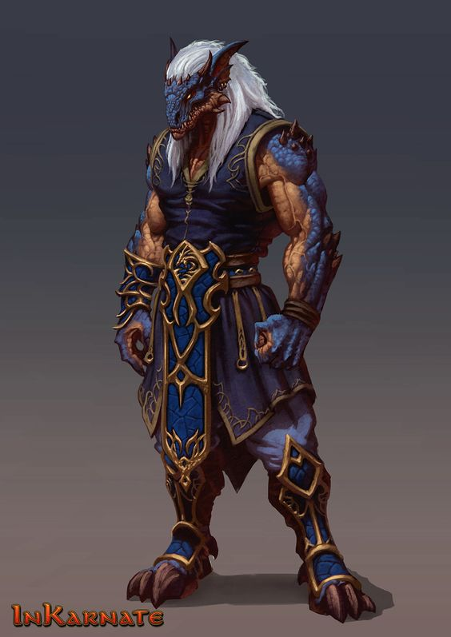

SEU PAI FICOU NA PRIMEIRA DAS TRÊS ESCADAS QUE levavam ao portal, imóvel. As escamas de sua face tinha ficado pálidas ao redor das bordas,
mas Clanless Mehen ainda aparentava ser capaz de derrubar um urso atroz apenas com suas mãos. Ela já não usava sua antiga armadura pesada,
substituída por uma armadura de escamas de cor violeta com detalhes prateados brilhantes. Também havia um brasão no seu braço,
a marca de uma casa estrangeira. A espada em suas costas era a mesma, aquela que ela carregava mesmo antes de ter encontrado os gêmeos,
quando partiu, nos portões de Arush Vayem.
Por toda sua vida, Farideh soube que decifrar as feições de seu pai era uma perícia que ela ainda tinha que aprender.
Um humano que não conseguiria observar a mudança nos olhos dela, Havilar certamente veria apenas a indiferença de um dragão no rosto de Clanless Mehen.
Mas a mudança das escamas, o arco de sua crista, o conjunto de seus olhos, o balbuciar de seus dentes – a face de seu pai dizia muito. Mas cada escama,
dessa vez, parecia completamente imóvel – a indiferença de um dragão, mesmo para Farideh.
–Erin M. Evans, O Adversário
Descendentes de dragões, como seus nomes demonstram, os draconatos andam orgulhosamente pelo mundo que os saúda com um temor incompreensível.
Moldados por deuses dracônicos ou pelos próprios dragões, draconatos originalmente nasceram de ovos de dragão como uma raça única, combinando
os melhores atributos de dragões e humanos. Alguns draconatos são servos fieis de dragões verdadeiros, outros formas as fileiras de soldados
em grandes guerras e ainda existem os que encontram-se à toa, sem um objetivo claro na vida.
ORGULHOSO PARENTESCO DRACÔNICO
Draconatos parecem muito com dragões que estão de pé em forma humanoide, apesar de não possuírem asas nem uma calda.
O primeiro draconato possuía escamas de matizes brilhantes combinando com as cores do dragão de que descendia,
mas gerações de misturas criaram uma aparência mais uniforme. Suas pequenas escamas finas, normalmente são de cor bronze ou latão,
algumas vezes indo até tons de escarlate, ferrugem, ouro ou cobreesverdeado. Eles são altos e de constituição forte,
muitas vezes medindo 1,95 metro de altura e pesando 150 kg ou mais. Suas mãos e pés são fortes, com três dedos de garras curvadas em cada mão.
O sangue de um tipo particular de dragão corre fortemente nas veias de alguns clãs de draconatos. Esses draconatos muitas vezes
ostentam escamas de cores mais similares ao seu dragão ancestral – vermelho, verde, azul ou branco brilhantes, preto lustroso ou ouro,
prata, latão, cobre ou bronze metálico reluzente.
CLÃS AUTOSSUFICIENTES
Para qualquer draconato, o clã é mais importante que sua própria vida. Draconatos devem ter devoção e respeito pelo seu clã acima de tudo,
até mesmo dos deuses. A conduta de cada draconato reflete na honra do seu clã, e trazer desonra para o clã pode resultar em expulsão e exílio.
Cada draconato sabe da sua posição e deveres para com o clã e a honra requer manutenção dos laços da sua posição.
Uma busca continua pelo aperfeiçoamento pessoal reflete na autossuficiência da raça como um todo. Draconatos valorizam a
perícia e excelência em todos os ramos. Eles odeiam fracassar e eles se forças a realizar esforços extremos antes de desistir de algo.
Um draconato tem na maestria de uma perícia em particular como um objetivo de vida. Membros de outras raças que partilham do mesmo comprometimento
tem facilidade em adquirir o respeito de um draconato. Apesar de todos os draconatos procurarem ser autossuficientes, eles reconhecem que ajuda,
algumas vezes é necessária em situações difíceis. Mas a melhor fonte quando ajuda é necessária é o clã e, quando um clã precisa de ajuda,
eles buscam outros clãs de draconatos antes de procurarem ajuda de outras raças – ou até mesmo dos deuses.